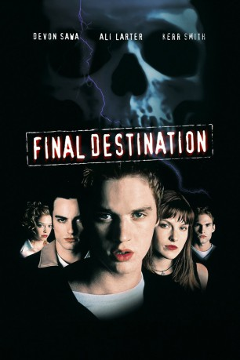
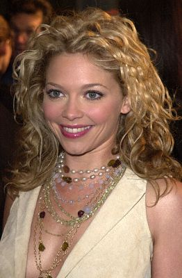
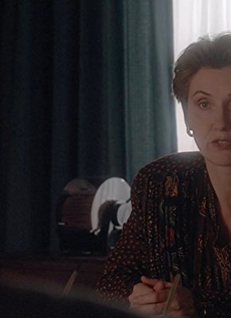

#306 Final Destination 1
 
 IMDB-Wertung: 6.7 / 10
IMDB-Wertung: 6.7 / 10  Metascore: 36
Metascore: 36 
Auf dem Weg zum Schüleraustausch nach Europa hat Alex Browning im wartenden Flugzeug plötzlich eine Vision, daß der Flieger abstürzen wird. Er bekommt einen hysterischen Anfall, woraufhin er des Flugzeugs verwiesen wird. Einige seiner Freunde und eine Lehrerin folgen. Tatsächlich explodiert die Maschine nach dem Start und macht Alex plötzlich zum Hauptverdächtigen. Viel schlimmer ist allerdings der Nebeneffekt, daß sein schicksalswidriges Verhalten den Tod offensichtlich nötigt, nachzuarbeiten, so daß die Überlebenden einer nach dem anderen eines plötzlichen Todes sterben. Alex ahnt den Plan, der dahinter steckt und macht sich so noch verdächtiger, entwickelt aber schnell einen Plan, den Tod auch bei der nächsten Runde auszutricksen...
Jahr: 2000
Dauer: 98 Minuten
FSK: 16
Land: USA Studio: New Line CinemaTonspuren: DTS - ,
Untertitel:
Auflösung: 1080p (1920×1080) Größe: 9338 MB
Genre: Horror, Thriller
Regisseur: James Wong
Drehbuch: Glen Morgan, James Wong, Jeffrey Reddick, Jeffrey Reddick
Soundtrack: Adam Hamilton, Shirley Walker
Darsteller:
 Devon Sawa als Alex Browning
Devon Sawa als Alex Browning Ali Larter als Clear Rivers
Ali Larter als Clear Rivers Kerr Smith als Carter Horton
Kerr Smith als Carter Horton- Kristen Cloke als Valerie Lewton
 Daniel Roebuck als Agent Weine
Daniel Roebuck als Agent Weine Roger Guenveur Smith als Agent Schreck
Roger Guenveur Smith als Agent Schreck Chad Donella als Tod Waggner
Chad Donella als Tod Waggner Seann William Scott als Billy Hitchcock
Seann William Scott als Billy Hitchcock Tony Todd als Bludworth
Tony Todd als Bludworth-  Amanda Detmer als Terry Chaney
- Brendan Fehr als George Waggner
 Lisa Marie Caruk als Christa Marsh
Lisa Marie Caruk als Christa Marsh Christine Chatelain als Blake Dreyer
Christine Chatelain als Blake Dreyer- Barbara Tyson als Barbara Browning
- Randy Stone als Flight Attendant
 Mark Holden als Co-Pilot
Mark Holden als Co-Pilot Fred Keating als Howard Seigel
Fred Keating als Howard Seigel- Denis Corbett als Paris Tourist , uncredited
- Yolanda Corbett als Paris Tourist , uncredited
 Alessandro Juliani als Guitar Player in Final Paris Scene , uncredited
Alessandro Juliani als Guitar Player in Final Paris Scene , uncredited- James Kirk als Extra , uncredited
- Morgan Strebler als Scared Airplane Passanger , uncredited
- Forbes Angus als Larry Murnau
- Robert Wisden als Ken Browning
-  P. Lynn Johnson als Mrs. Waggner
- Larry Gilman als Mr. Waggner
- Guy Fauchon als Hare Krishna
- Marrett Green als TV News Anchor
- John Hainsworth als Minister
- Pete Atherton als Student Singer
- Nicole Robert als Ticket Clerk
- Kristina Matisic als Reporter
- Martin Christopher als Principal , uncredited
- Mark Marriott als Scared Airline Passenger , uncredited
- Natasha Morley als Girl with Red Sweater at Airport , uncredited
- Troy Yorke als Lou Gehrig's Man , uncredited
Datei: X:\FSK18-Collections\Final Destination\Final Destination 1 (2000, FSK16, 1920x1080).mkv seit 16.02.2015
Festplatte: FSK18
 Es gibt insgesamt 10 Filme in der Gruppe 'FSK18-Collections\Final Destination'
Es gibt insgesamt 10 Filme in der Gruppe 'FSK18-Collections\Final Destination'